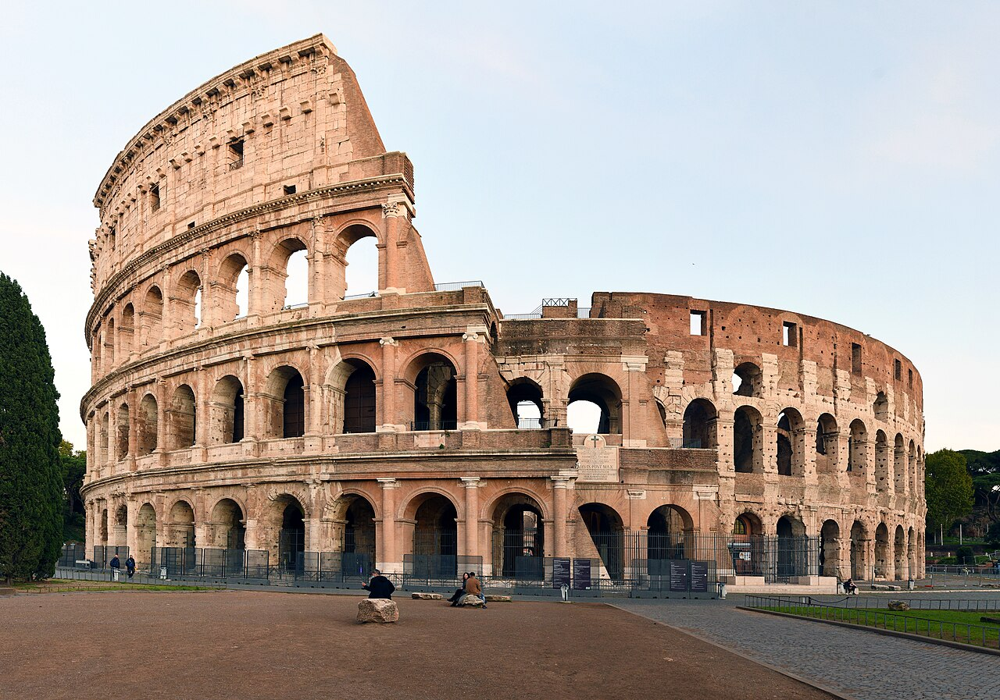
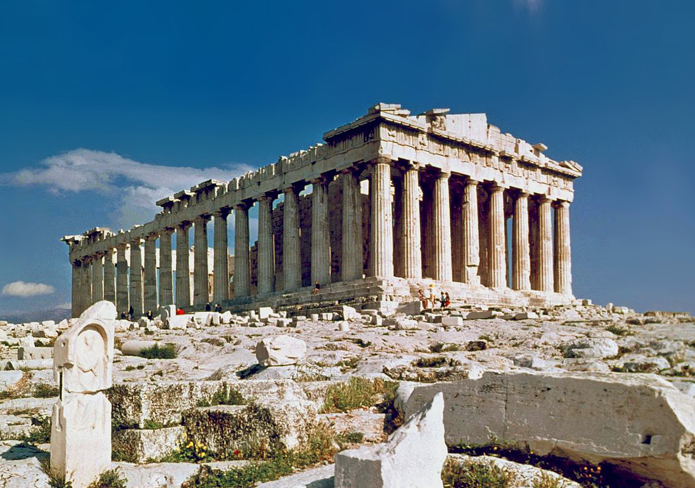
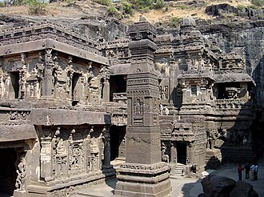

Ancient Roman Architecture
Posted on 01.01.2017 by Someone

Ancient Roman architecture adopted the external language of classical Greek architecture for the purposes of the ancient Romans, but grew so different from Greek buildings as to become a new architectural style. The two styles are often considered one body of classical architecture. Roman architecture flourished in the Roman Republic and even more so under the Empire, when the great majority of surviving buildings were constructed. It used new materials, particularly concrete, and newer technologies such as the arch and the dome, to make buildings that were typically strong and well-engineered. Large numbers remain in some form across the empire, sometimes complete and still in use.
Ancient Greek Architecture
Posted on 01.01.2017 by Someone

The architecture of ancient Greece is the architecture produced by the Greek-speaking people (Hellenic people) whose culture flourished on the Greek mainland, the Peloponnese, the Aegean Islands, and in colonies in Anatolia and Italy for a period from about 900 BC until the 1st century AD, with the earliest remaining architectural works dating from around 600 BC.[1] Ancient Greek architecture is best known from its temples, many of which are found throughout the region, mostly as ruins but many substantially intact. The second important type of building that survives all over the Hellenic world is the open-air theatre, with the earliest dating from around 525-480 BC.
Ancient Indian Architecture
Posted on 01.01.2017 by Someone

Indian architecture is as old as the history of the civilization. The earliest remains of recognizable building activity in the India dates back to the Indus Valley cities. Among India's ancient architectural remains, the most characteristic are the temples, Chaityas, Viharas, Stupas and other religious structures. In ancient India, temple architecture of high standard developed in almost all regions. The distinct architectural style of temple construction in different parts was a result of geographical, climatic, ethnic, racial, historical and linguistic diversities. The Rock-cut structures present the most spectacular piece of ancient Indian art specimen. Most of the rock-cut structures were related to various religious communities.